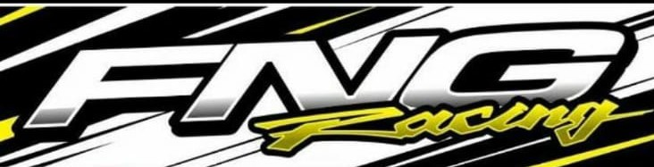

Nuestros Servicios
MECANICA GENERAL
- Revisión y chequeo de la unidad, sistemas de gestión, orden de marcha y encendido
- Lubricación
- Mantenimientos programados
- Sistemas de frenos
- Inyección Nafta / diesel , vehículos livianos
- Especialidad en vehículos SUV y 4x4
- Control Emisiones
TESTEOS COMPUTARIZADOS
-
Análisis y verificación de fallas electrónicas mediante sistemas diversos OBDII
-
Confección árbol de diagnosis
-
Chequeo de módulos electrónicos
RECOMENDACIÓN DE UNIDADES
(2DA MANO)
-
Chequeo completo de unidades para ofertar
- Control Emisiones
- Chequeo y verificación de unidades para adquirir
CARROCERÍA
-
Reparación de chapa y pintura con los más altos estándares
-
Garantia de trabajo
- Control Emisiones
Atención a Compañías de Seguros
CAJAS AUTOMÁTICAS
-
Verificación de gestión en cajas automáticas, secuenciales (DSG, Multitronic, Stronic y Tiptronic).
-
Cajas de reducción (IRD)
-
Lubricación y consejos de mantenimiento
TREN DE RODAJE
- Verificación de tren delantero
-
Alineación y balanceo de cubiertas
-
Reparación llantas
